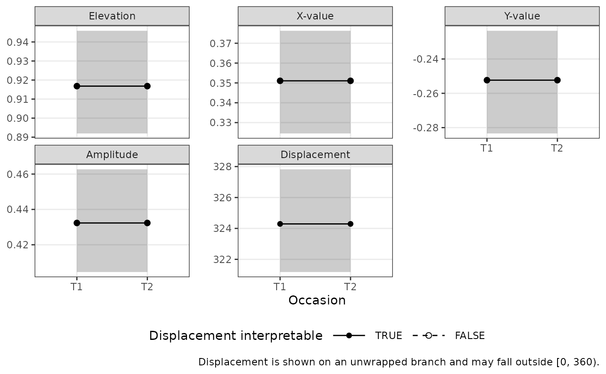
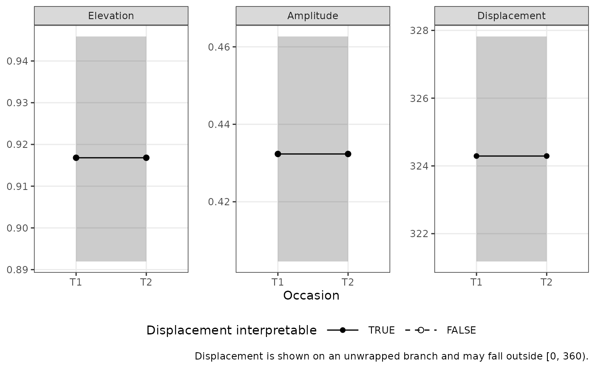
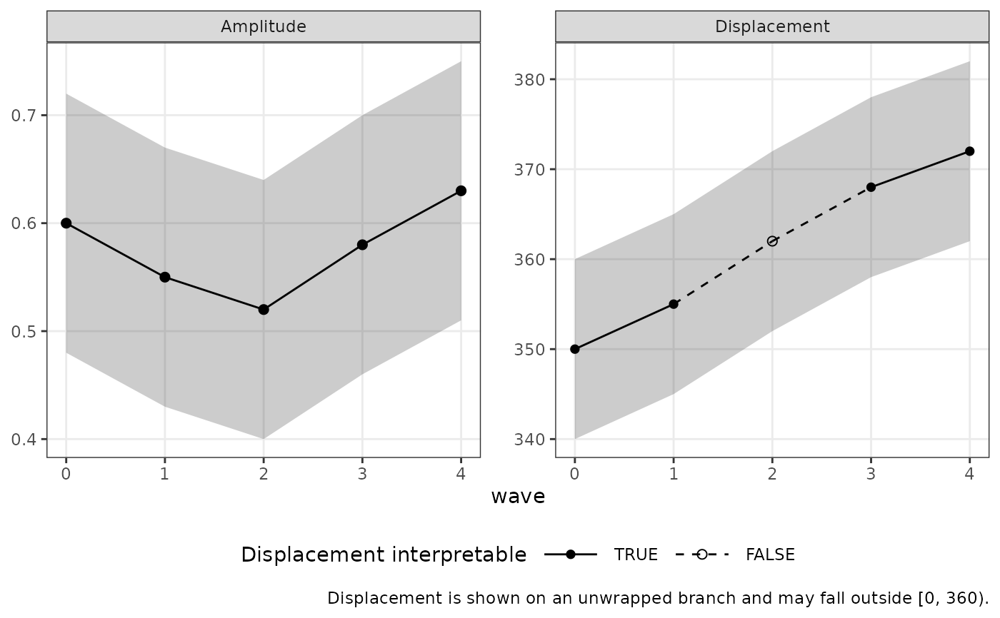

Plot each Structural Summary Method parameter against time, one facet per parameter, with its confidence interval as a band. This is a Cartesian diagnostic plot, not a circumplex figure: the horizontal axis is time, not angle.
Usage
ssm_plot_trajectory(x, ...)
# Default S3 method
ssm_plot_trajectory(x, ...)
# S3 method for class 'circumplex_ssm'
ssm_plot_trajectory(x, drop_xy = FALSE, base_size = 11, na.rm = TRUE, ...)
# S3 method for class 'data.frame'
ssm_plot_trajectory(
x,
time,
drop_xy = FALSE,
base_size = 11,
na.rm = TRUE,
...
)Arguments
- x
An SSM results object produced by
ssm_analyze()with theoccasionsargument or byssm_analyze_long(), or a trajectory table (a data frame) as described above.- ...
Not used. Supplying an unrecognized argument produces a warning.
- drop_xy
A logical determining whether the X-value and Y-value panels should be omitted (default =
FALSE), leaving elevation, amplitude, and displacement.- base_size
A positive number determining the base font size of the plot (default = 11).
- na.rm
A logical determining whether time points that cannot be plotted (no defined displacement) are dropped silently (default =
TRUE) or with a warning naming how many were removed (FALSE).- time
A string naming the numeric time column of a trajectory table. Required for the data frame method; unused for SSM objects.
Details
Two kinds of input are accepted, and they differ only in their time axis:
An SSM results object with occasions, from
ssm_analyze()with theoccasionsargument or fromssm_analyze_long(). Occasions are discrete and ordered, so the axis is discrete.A trajectory table: a data frame with one row per time point, a numeric time column named by
time, and the columnsa_est,a_lci,a_uci,d_est,d_lci, andd_uci(optionally thee_*,x_*, andy_*triples, and a logicalcertifiedcolumn). This is the shape a model-based workflow assembles by evaluating a fitted growth model at each time point and passing the draws throughssm_draws(); seevignette("growth-ssm-analysis"). The axis is continuous, so unequally spaced time points are drawn at their actual spacing.
Both paths share one implementation of the displacement unwrap and the certification marking described below.
The displacement panel is drawn on an unwrapped branch, so a profile whose displacement crosses the 0/360 boundary renders as one continuous path rather than jumping a full turn. Values on that panel may therefore fall outside [0, 360); each confidence bound is placed at its signed angular distance from its own estimate. Unwrapping assumes the profile rotates less than a half-turn between consecutive time points at which its displacement is defined – no data can verify this, so time points that are far apart, or a series with a gap, should be read with that in mind.
Occasions appear in the order they were supplied to ssm_analyze() (or in
the occasion factor's level order for ssm_analyze_long()), never in
alphabetical order.
On the displacement panel, a time point whose amplitude confidence interval
is too close to zero for its displacement to be interpretable is drawn as a
hollow point; see ssm_analyze() for the certification rule. For an SSM
object the verdict is computed from the amplitude interval; for a trajectory
table it is read from the optional certified column, and when that column
is absent no interpretability claim is made or shown. A profile with no
defined displacement at all (a flat profile) leaves a gap in that panel.
A contrast row is never plotted as a time point – it is a difference, not a
time point. Use ssm_plot_contrast() for it.
See also
geom_ssm_path() and ssm_plot_circle(path = TRUE), which draw the
same change across occasions as movement on the circumplex canvas rather
than as parameter-by-time panels.
Other visualization functions:
plot.circumplex_ci_accuracy(),
ssm_plot_circle(),
ssm_plot_contrast(),
ssm_plot_curve()
Examples
# `boots` is lowered from its default of 2000 throughout these examples so
# they run quickly; a reported analysis should use the default.
# \donttest{
data("jz2017")
scales <- c("PA", "BC", "DE", "FG", "HI", "JK", "LM", "NO")
t1 <- jz2017[, scales]
t1$id <- seq_len(nrow(t1))
t1$occasion <- "T1"
t2 <- t1
t2$occasion <- "T2"
res <- ssm_analyze_long(rbind(t1, t2),
scales = scales, id = "id", occasion = "occasion",
boots = 200
)
ssm_plot_trajectory(res)

ssm_plot_trajectory(res, drop_xy = TRUE)

# }
# A model-based trajectory table, plotted on a continuous time axis
trajectory <- data.frame(
wave = 0:4,
a_est = c(0.60, 0.55, 0.52, 0.58, 0.63),
a_lci = c(0.48, 0.43, 0.40, 0.46, 0.51),
a_uci = c(0.72, 0.67, 0.64, 0.70, 0.75),
d_est = c(350, 355, 2, 8, 12),
d_lci = c(340, 345, 352, 358, 2),
d_uci = c(0, 5, 12, 18, 22),
certified = c(TRUE, TRUE, FALSE, TRUE, TRUE)
)
ssm_plot_trajectory(trajectory, time = "wave")
